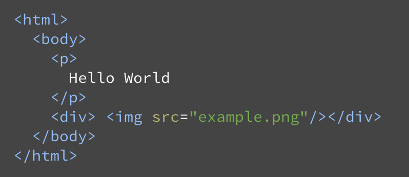
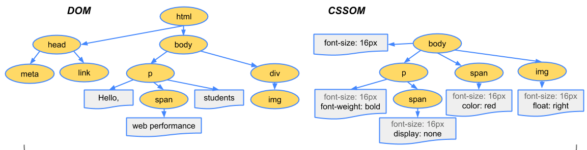
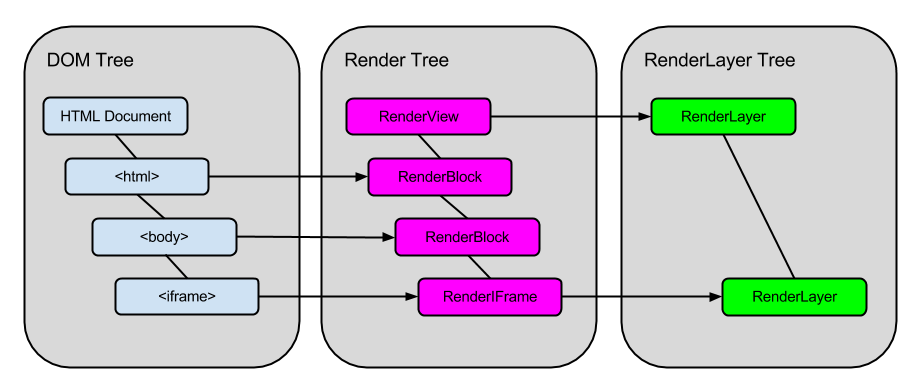
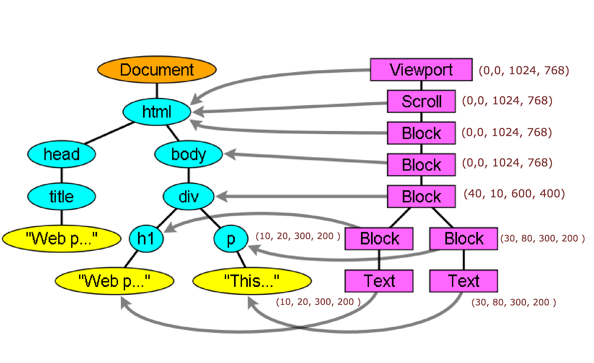
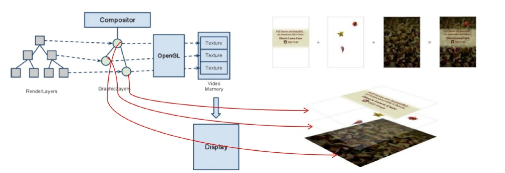
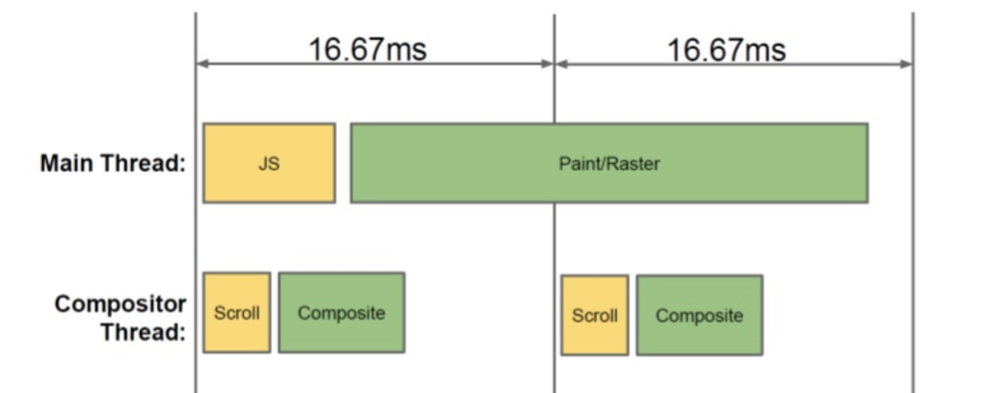
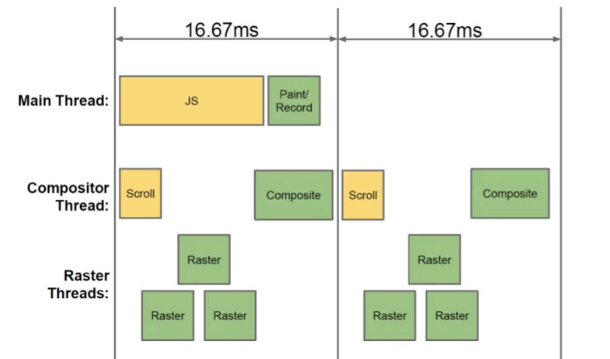
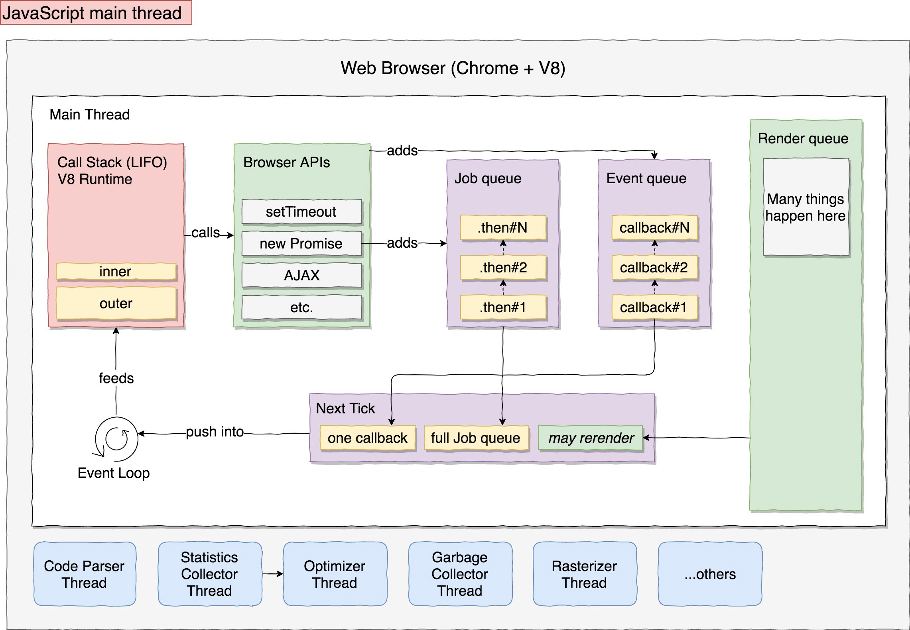

Browser Internals
Created by Anvay Patil
Note: arrow keys to move on slides, Esc to zoom-out
About Me ?
Why should one know about internals?
What are we deep diving into.?
- Yesterday's and Today's, Browsers
- Architecture
- Rendering Engines
- Javascript Engines
High Level Architecture
Browser Components
- User Interface:
- Address Bar, Back, Forward, Bookmark, Reload, Dev Tools etc
- Browser Engine:
- Bridge between User Interface and Rendering Engine
- Provides hooks to initiate loading of URL, other actions like reload, back forward etc.
- Layout/Rendering Engine:
- Parse the HTML Document, create Content Tree/DOM Tree
- Renders the Screen based on DOM Tree.
- Networking:
- Handles networking aspects of Internet Communication, HTTP/s, FTP etc
- Implements a cache of retrieve documents to minimize network traffic
- Javascript Engine:
- Executes JS code and results to Rendering Engine
- participate in DOM hooks, execution cycle
- Data Persistence:
- Helps browser to store data locally and access to File System
- Storage includes Cookie, Local Storage, Session Storage, IndexedDB, WebSQL and FileSystem
Deep Dive: Rendering engines
So what does exactly Rendering engines do?

From HTML document to Display

Document Parsing
- Lexical Analysis
- Syntax Analysis
- Creation of Parse Tree
So how does DOM Tree looks like.?
.

 .
.
.
.
.
Parsed CSS Rules Tree

The CSS Box Model
 .
.
A look at CSSOM Tree
 .Render Tree
- While DOM tree & CSSOM is constructed,
Browsers constructs another tree called Render Tree. - Firefox calls it Render Frames/Frame Tree
The relation between DOM Tree and Render tree
 .
.
How is Render Tree Constructed?
- The DOM and CSSOM trees are combined to form the Render Tree
- Render tree contains only the nodes required to render the page
- Layout computes the exact position and size of each object.
- The final render tree renders pixels to the screen in paint cycle.
Render Tree Object
Base class of all the Renderers
class RenderObject{
virtual void layout();
virtual void paint(PaintInfo);
virtual void rect repaintRect();
Node* node; //the DOM node
RenderStyle* style; // the computed style
RenderLayer* containingLayer; //the containing z-index layer
}
Render Object Construction .
RenderObject* RenderObject::createObject(Node* node, RenderStyle* style)
{
Document* doc = node->document();
RenderArena* arena = doc->renderArena();
...
RenderObject* o = 0;
switch (style->display()) {
case NONE:
break;
case INLINE:
o = new (arena) RenderInline(node);
break;
case BLOCK:
o = new (arena) RenderBlock(node);
break;
case INLINE_BLOCK:
o = new (arena) RenderBlock(node);
break;
case FLEX:
case INLINE_FLEX:
o = new (arena) RenderFlexibleBox(node);
break;
...
}
return o;
}
Render Layer Encapsulation

Now Let's revise

Intended Layout

Layout/Reflow Phase
- When render tree is created, it doesn't contains position and size.
- Calculation of Position & Size of each Render Objects happens in this phase
- Layout is recursive process happens from top to bottom.
- Position of layout is 0,0 and dimension is viewport only
- Viewport is the visible part of brower window, rest is hidden via scroll
- It follows a dirty bit system when calculation happens having flags; dirty & childern are dirty
Layout/Reflow Phase
- CSS Visual Formatting Model
- Normal Flow
- Block formatting contexts
- Inline formatting contexts
- Relative positioning
- Floats
- Absolute positioning
- Normal Flow
- Dirty Bit System
- Global & incremental layout
- Asynchronous and Synchronous layout
- Width calculations

Layout/Reflow Process
- Parent renderer determines its own width.
- Calculation of Position & Size of each Render Objects happens in this phase
- Parent goes over all children:
- Place the child renderer (sets its x and y).
- Calls child layout if needed–they are dirty or we are in a global layout,
or for some other reason–which calculates the child's height. - Position of layout is 0,0 and dimension is viewport only
- Parent uses children's accumulative heights and the heights of margins and padding to set its own height–this will be used by the parent renderer's parent.
- Sets its dirty bit to false.
Painting/Rendering Phase
- Render tree is traversed and "paint()" method is called to display content on the screen
- Painting can entire tree or incremental based on RenderObjects & childern's state
- Periodically, RenderObject invalidates its rectangle the dirty flag.
- It causes paint cycle, to find dirty region and repaint again.
Accelerated Rendering
Painting Challenges: Ideal vs real
Can we do better?

And Final Decomposition
Let's now Talk about browser threads
Lets talk about JS code execution?
Lets look again.!
- JS code execution hold DOM modification hooks
- JS DOM hooks eg.
document.getElementById('container') - Based on DOM hooks, DOM tree get modified.
- With DOM tree changed, Render Tree is constructed again in every frame calculation.
- Dirty regions are painted on each pass of frame execution
- So everything happens in one single thread.
Event Loop
- Browser Main thread is a Event Loop.
- It's an infinite loop that keeps the process alive.
- It waits for events (like layout and paint events) and processes them.
// Code from Firefox
while (!mExiting)
NS_ProcessNextEvent(thread);

Have you heard this term "Critical Rendering Path"?
Critical Rendering Path
- Constructing the DOM Tree
- Constructing the CSSOM Tree
- Running Javscript
- Creating Render Tree
- Generating the Layout
- Painting

CRP Timeline
- Send Request - GET request sent for index.html
- Parse HTML and Send Request -
Begin parsing of HTML and DOM construction.
Send GET request for style.css and main.js - Parse Stylesheet - CSSOM created for style.css
- Evaluate Script - Evaluate main.js
- Layout - Generate Layout based on meta viewport.
- Paint - Paint pixels on document
How does Browser Event Flow

References & Links
Q&A
Thank you :)